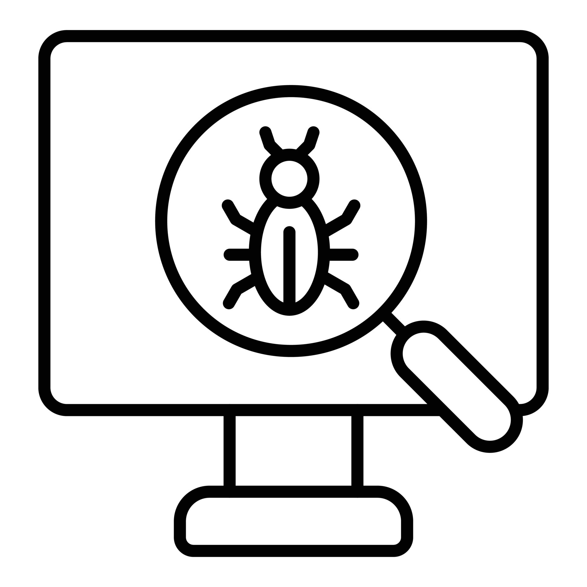
1. Introduction
I’ve coded from scratch a neural network using Kaggle Titanic dataset based on a Jeremy Howard’s popular NN-model.
I noticed descrepancies in Loss between my model and the reference model and will attempt debug My Model (TP) without looking at the Reference Models (RM) code.
2. The Problem
Loss differences (from 2nd epoch onwards):
- TP-Loss: 0.544 (epoch_1), 0.538 (epoch_2)
- RM-Loss: 0.543 (epoch_1), 0.532 (epoch_2)
The difference grows per epoch.
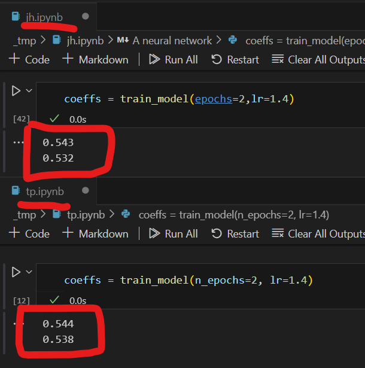
3. The Approach
This neural network model only has one-hidden-layer.
I’ve decided to test differences at 3 stages:
- Input level (input data, coefficients, and constants)
- Intermediary Calculations (hidden layers and relu)
- Predictions (predictions and sigmoid)
- Update Coefficients (gradients and updated coefficients)
4. The Analysis
4.1 Input Level - Normalised Input Data - idep_mxn
EPOCH 1 and 2: OKAY (data-matching) 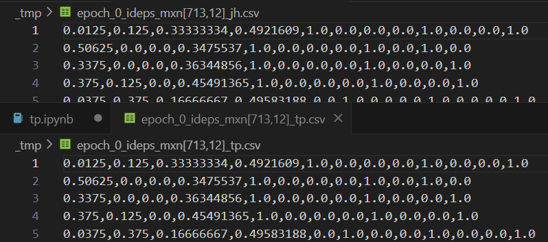
4.2 Input Level - Coeffs - Layer 1 - L1_nxq
EPOCH 1: OKAY (data-matching) 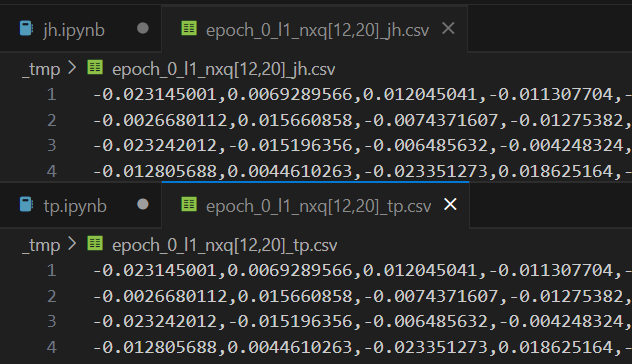
4.3 Input Level - Coeffs - Layer 2 - L2_qx1
EPOCH 1: OKAY (data-matching) 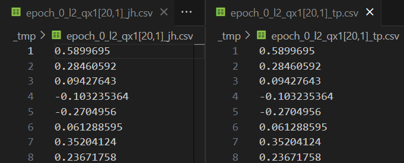
4.4 Input Level - Coeffs - Constant - CONST_1
EPOCH 1: OKAY (data-matching)
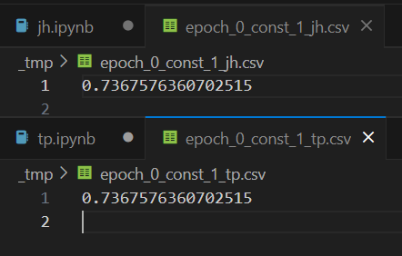
4.5 Intermediary Calcs - idep@L1 - pred_PSET_HL_mxq
EPOCH 1: OKAY (data-matching) 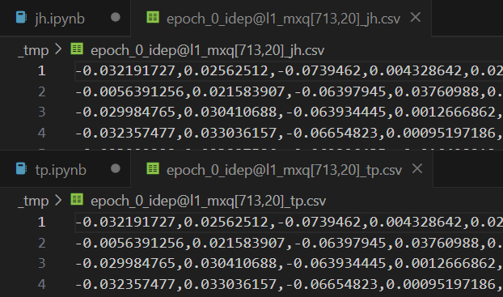
4.6 Intermediary Calcs - relu(idep@L1) - PSET_HL_mxq
EPOCH 1: OKAY (data-matching) 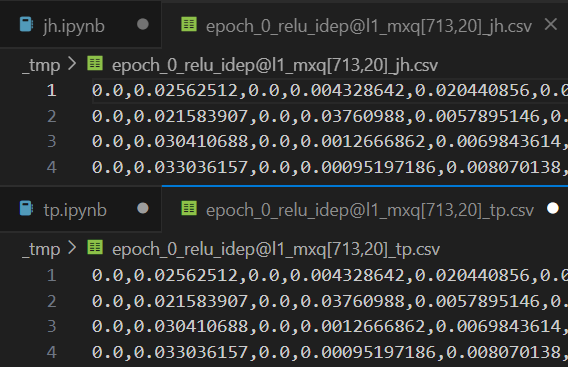
4.7 Final Preds - PSET_HL_mxq@L2 - PREDS_mx1
EPOCH 1: OKAY (data-matching)
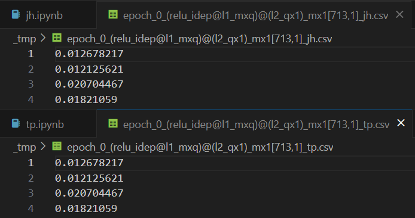
4.8 Final Preds - PREDS_mx1 + CONST_1 - PREDS_C_mx1
EPOCH 1: OKAY (data-matching)
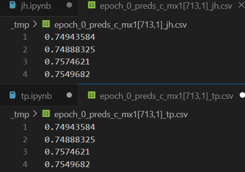
4.9 Final Preds - Sigmoid(PREDS_C_mx1) - SGM_PREDS_C_mx1
EPOCH 1: OKAY (data-matching)
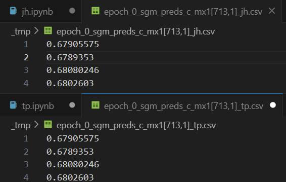
4.10 - Loss -
EPOCH 1: NOT OKAY, Loss values different from 4th decimals
Since Loss is created taking the absolute difference (then mean) between the:
predictionsand- (actual)
dependent variables
Lets validate across the neural network models:
DependentVariable (“Survived”)
Predictions
| Model | Loss |
|---|---|
| TP | 0.5433918237686157 |
| RM | 0.5439100861549377 |
5. The Bug
5.1 Input Level - Dep Variable - dep_mx1
EPOCH 1: NOT OKAY:- **Dimensions are different!
Found the Bug!
- TP-dimensions: [713,1]
- RM-dimensions: [713]
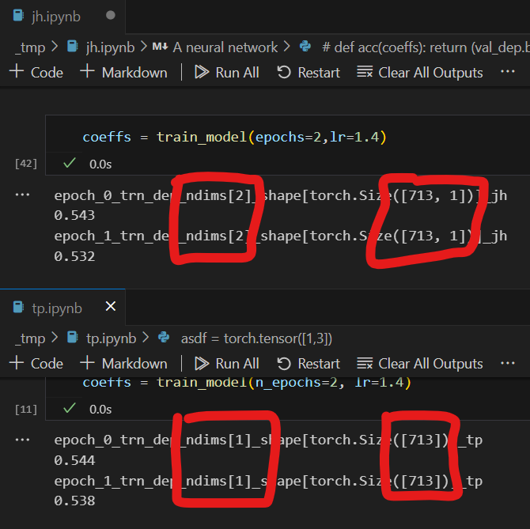
6. The Fix
6.1 Adding Trailing Dimension [:,None]
Solution: Add trailing dimesion for dependent variables, fixing the predictions calculation, thus loss.
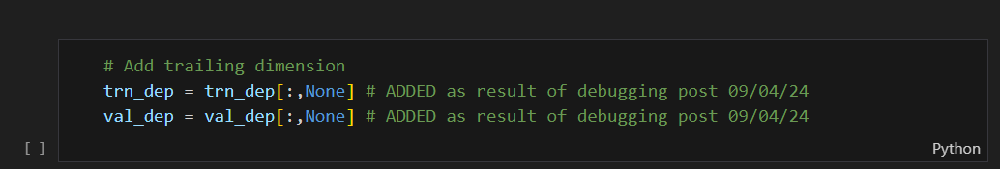
6.2 Check New Loss
It matches EXACTLY!
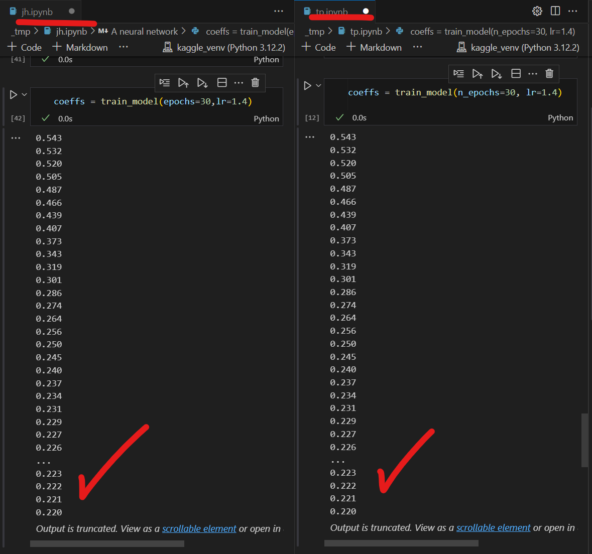
7. Conclusion
It goes to show how important getting the correct dimensions can change things so subtley and materially at the same time.